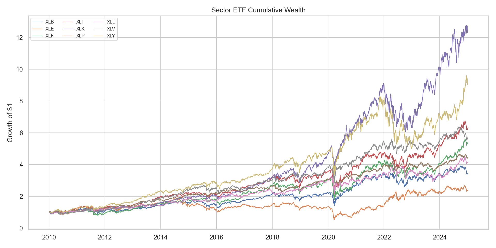
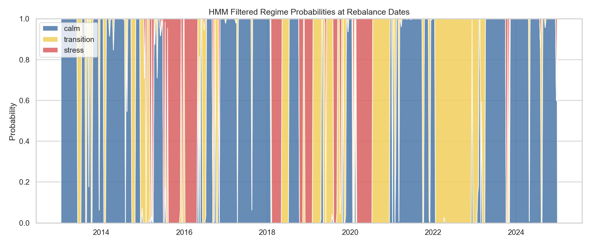
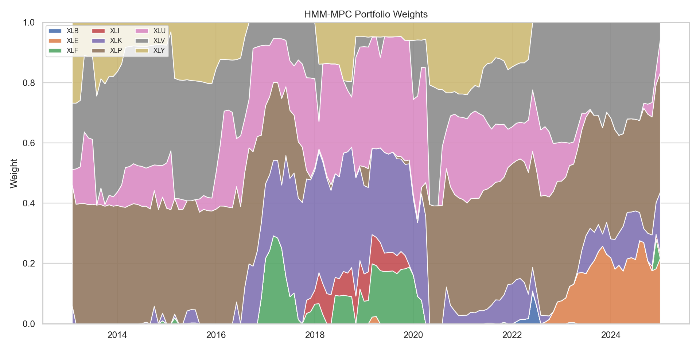
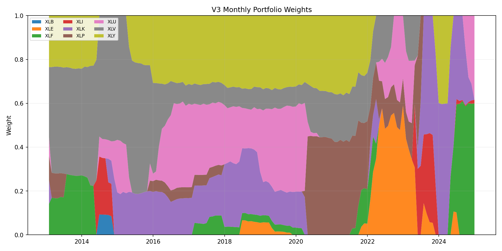
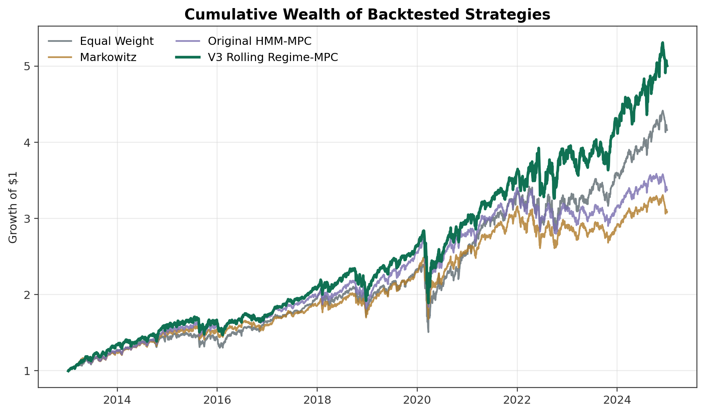
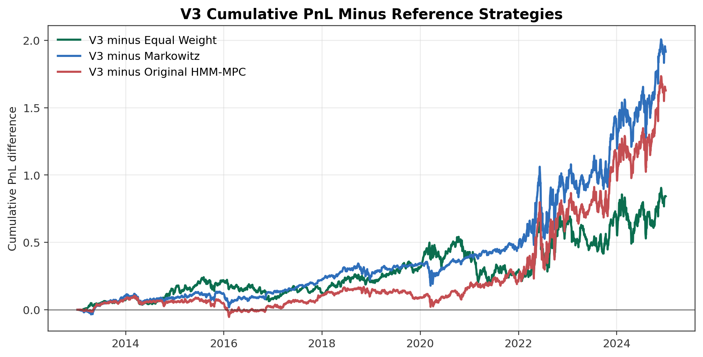
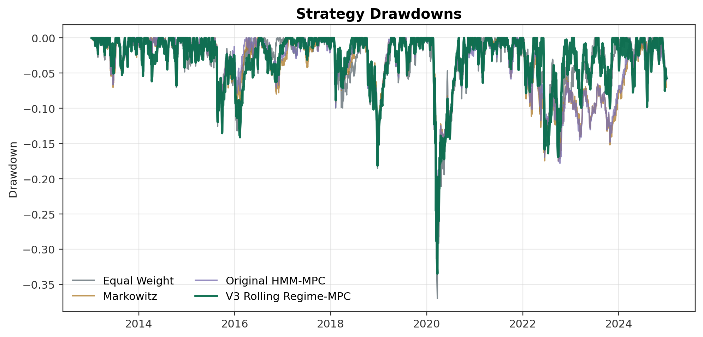
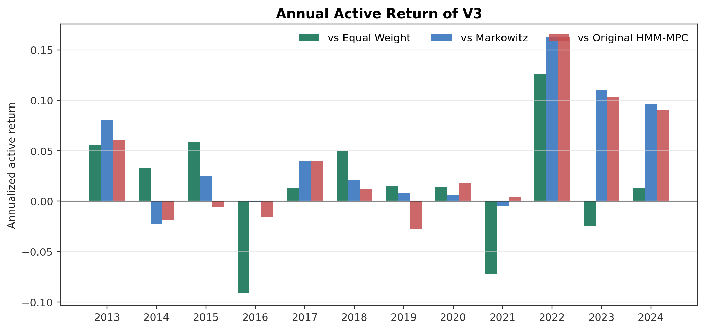
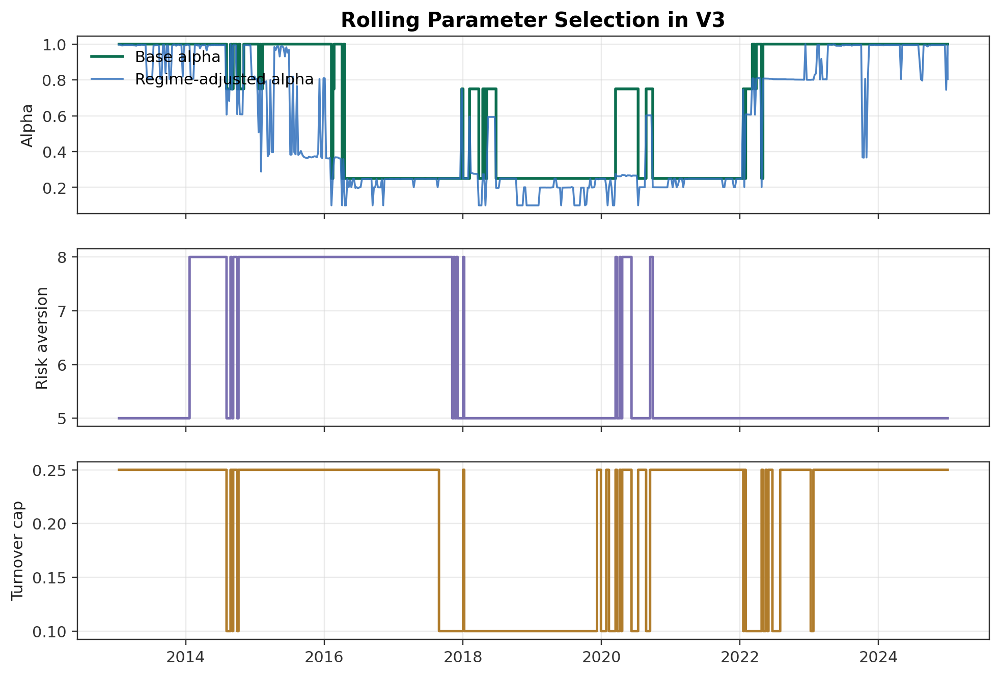
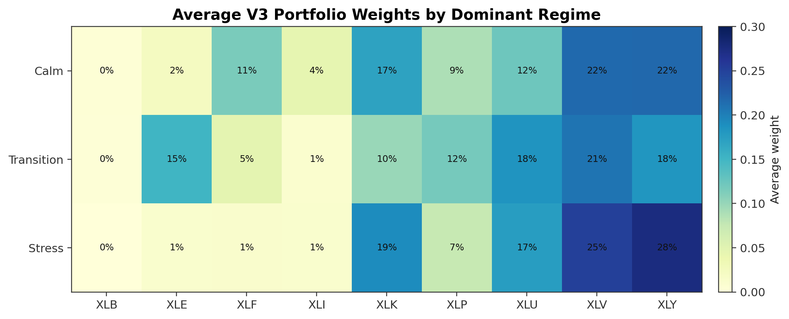

Zoom progress report
Regime-aware multi-period portfolio optimization solved with CVXPY.
A rolling empirical study of U.S. sector ETF allocation that combines market regime estimation, convex model predictive trading, realistic transaction costs, and benchmark-driven diagnostics.
to 2024-12-31 from V3 manifest
All empirical numbers in this report are generated from the local project CSV/JSON artifacts listed in the final source section.
Research question
Can regime information improve a realistic convex trading strategy?
The project tests whether a regime-aware multi-period optimizer can outperform both a simple investable benchmark and a classical mean-variance optimizer under rolling, no-look-ahead conditions.
Meeting-level takeaways
- The initial HMM-MPC model was theoretically aligned with the project, but it underperformed equal weight.
- The diagnosis pointed to weak rolling-mean return forecasts and excessive defensive tilts.
- V3 keeps the convex MPC structure, but improves the return input and selects parameters through a rolling benchmark-aware rule.
- V3 finishes above all baselines in annual return and Sharpe in the full sample.
Data
Moderate, liquid, and reproducible asset universe.
The empirical universe is the nine long-history Select Sector SPDR ETFs: XLB, XLE, XLF, XLI, XLK, XLP, XLU, XLV, and XLY.
- Daily adjusted prices, close prices, and volume come from the project Yahoo Finance data pipeline.
- Regime features also use FRED
VIXCLSandBAMLH0A0HYM2. - The ETF universe reduces survivorship issues, keeps covariance estimation stable, and remains directly tradable.
| Check | Value |
|---|---|
| Asset count | 9 |
| Raw price start | 2010-01-04 |
| Raw price end | 2024-12-31 |
| Clean return start | 2010-01-05 |
| Clean return end | 2024-12-31 |
| Return observations | 3,773 |
| Macro missing after alignment | 0 |
| Rolling covariance condition number, median | 54.78 |
| Rolling covariance condition number, max | 106.06 |

Market regime
HMM probabilities enter the optimizer, not a separate trading rule.
The regime layer estimates latent market states from daily features and passes filtered probabilities into return, covariance, and trading-cost inputs.
- Features are built with rolling, past-information-only transformations.
- Regimes are interpreted as calm, transition, and stress states.
- Stress probabilities shrink alpha and can increase risk or cost inputs.

Optimization model
Finite-horizon convex MPC, execute the first trade only.
- Long-only and fully invested sector weights.
- Single-asset cap is 60% in the final empirical model.
- Transaction costs are included directly in the objective.
- Problems are solved through CVXPY with OSQP as the first solver.
Training and backtest framework
No future information is used at the decision date.
At each weekly rebalance, the strategy estimates inputs using information available no later than date t, solves the convex program, and applies the first trade on the next trading day.
Leakage controls from the V3 manifest
- Candidate returns are generated sequentially.
- Selection at each rebalance uses candidate returns through the previous trading day.
- Portfolio optimization uses returns through the decision date and trades on the next trading day.
Baselines and initial model
The first HMM-MPC was useful, but not enough.
Equal weight is the simple investable benchmark. Markowitz CVXPY is the classical optimization benchmark. The original HMM-MPC satisfies the regime-aware multi-period convex optimization requirement, but it does not beat equal weight.
| Strategy | Ann. Return | Sharpe | Max Drawdown | Final Wealth | Rebalance Turnover |
|---|---|---|---|---|---|
| Equal Weight | 12.65% | 0.779 | -36.98% | 4.159 | 0.58% |
| Markowitz | 9.87% | 0.679 | -32.51% | 3.086 | 4.06% |
| Original HMM-MPC | 10.70% | 0.714 | -32.65% | 3.374 | 1.82% |
Diagnosis
The problem was the input design, not the convex program itself.
- Rolling sample means had low cross-sectional forecasting power.
- Small expected-return errors created large portfolio tilts.
- The initial HMM-MPC concentrated in defensive sectors and missed several growth-led or cyclical rallies.
- A fixed parameter choice can lock in a market style from one historical period.
| Window | Horizon | Mean IC | Median IC | Sign Hit Rate | Top-Bottom Realized |
|---|---|---|---|---|---|
| 252 | 1 | 0.013 | 0.033 | 52.38% | 9.71% |
| 252 | 21 | 0.003 | 0.017 | 56.79% | 8.37% |
| 504 | 1 | 0.018 | 0.033 | 52.89% | 3.22% |
| 504 | 21 | 0.002 | 0.000 | 59.40% | 4.90% |

Final model
V3 rolling regime-MPC keeps the optimization structure and improves the inputs.
Momentum return input
12-1 style sector momentum replaces noisy raw rolling means.
Regime-dependent alpha
Calm regimes retain more alpha; stress regimes shrink it.
Rolling candidate selection
The score rewards total performance and performance relative to equal weight.
| Candidate | Gamma | Base Alpha | Turnover Cap | Selections |
|---|---|---|---|---|
| g5_a100_cap25_s1 | 5.00 | 1.00 | 25% | 183 |
| g8_a100_cap25_s1 | 8.00 | 1.00 | 25% | 104 |
| g5_a025_cap10_s1 | 5.00 | 0.25 | 10% | 98 |
| g5_a025_cap25_s1 | 5.00 | 0.25 | 25% | 81 |
| g8_a025_cap25_s1 | 8.00 | 0.25 | 25% | 74 |
| g5_a075_cap10_s1 | 5.00 | 0.75 | 10% | 40 |
V3 weight dynamics
The final model changes sector exposure through time.
This figure shows the monthly V3 sector weights generated by the rolling regime-MPC experiment.
- The weights are produced by the V3 optimization run, not manually reconstructed.
- The plot helps explain how the strategy moves across sector exposures rather than only reporting final performance.
- It complements the regime average-weight diagnostics shown later in the report.

Main results
V3 improves return and Sharpe relative to all three references.

| Strategy | Ann. Return | Ann. Vol. | Sharpe | Max Drawdown | Final Wealth | Rebalance Turnover | Total Cost |
|---|---|---|---|---|---|---|---|
| Equal Weight | 12.65% | 16.24% | 0.779 | -36.98% | 4.159 | 0.58% | 0.36% |
| Markowitz CVXPY | 9.87% | 14.54% | 0.679 | -32.51% | 3.086 | 4.06% | 2.54% |
| Original HMM-MPC | 10.70% | 14.98% | 0.714 | -32.65% | 3.374 | 1.82% | 1.74% |
| V3 Rolling Regime-MPC | 14.40% | 16.43% | 0.876 | -33.45% | 5.001 | 1.36% | 1.04% |
Excess performance
The improvement is visible against every reference strategy.
| Comparison | Active Return | IR | Return Diff. | Sharpe Diff. | Final Wealth Ratio |
|---|---|---|---|---|---|
| V3 minus Equal Weight | 1.57% | 0.226 | 1.75% | 0.097 | 1.203x |
| V3 minus Markowitz | 4.33% | 0.603 | 4.52% | 0.197 | 1.621x |
| V3 minus Original HMM-MPC | 3.52% | 0.515 | 3.70% | 0.162 | 1.482x |

Diagnostics
Result checks for yearly performance, drawdown, selection, and regimes.




| Regime | Largest Average Weights |
|---|---|
| Calm | XLY 21.8%, XLV 21.6%, XLK 16.9% |
| Stress | XLY 27.5%, XLV 25.1%, XLK 19.0% |
| Transition | XLV 20.8%, XLU 18.3%, XLY 18.3% |
Traceability checklist
- Performance values come from CSV outputs.
- V3 design settings come from the V3 manifest and experiment outputs.
- Mathematical formulas match the project empirical/theoretical documents.
- Figures are linked from existing project output directories.
Empirical source files
docs/04_empirical_section/tables/tab_01_data_quality.csvdocs/04_empirical_section/tables/tab_03_original_strategy_performance.csvdocs/04_empirical_section/tables/tab_04_v3_full_sample_performance.csvdocs/04_empirical_section/tables/tab_05_v3_excess_performance.csvdocs/04_empirical_section/tables/tab_07_v3_selection_summary.csvdocs/04_empirical_section/tables/tab_08_v3_average_weights_by_regime.csvdocs/04_empirical_section/tables/tab_10_forecast_diagnostics.csvimprovements/06_v3_rolling_regime_mpc/results/manifest.jsonimprovements/06_v3_rolling_regime_mpc/results/figures/v3_monthly_weights.pngimprovements/06_v3_rolling_regime_mpc/results/tables/candidate_rebalance_records.csvimprovements/06_v3_rolling_regime_mpc/results/tables/selected_params_over_time.csv